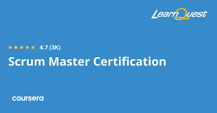
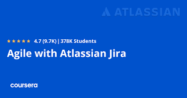
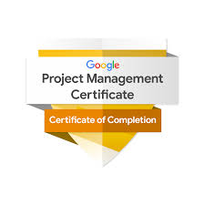

Drexel University
Master of Science, Information Systems (Jan 2023 - Sep 2024) | Philadelphia
Credentials
Formal information systems education supported by certifications in Splunk search, Agile delivery, project management, Jira, and cybersecurity fundamentals.
Master of Science, Information Systems (Jan 2023 - Sep 2024) | Philadelphia
Bachelor of Science, Information Systems (Feb 2016 - May 2020) | The Gambia
Advanced Splunk training focused on building efficient searches, creating useful dashboards, and extracting actionable security and operations insights from machine data.
Skills learned: SPL querying, log analysis, field extraction, reporting, dashboard creation.

Comprehensive Scrum training covering Agile team facilitation, sprint planning/execution, and scaling Scrum practices across larger organizations.
Skills learned: Scrum framework, Agile ceremonies, backlog management, team facilitation, scaling Agile.

Hands-on course applying Agile project delivery workflows in Jira to plan, track, and manage team execution effectively.
Skills learned: Jira boards, sprint tracking, Agile workflow design, issue lifecycle management, team collaboration.

Career-focused project management program covering end-to-end delivery from initiation and planning through execution and closure.
Skills learned: project planning, risk management, stakeholder communication, scheduling, Agile and Scrum delivery.
Foundational cybersecurity program with practical labs in threat detection, incident response, network defense, and security operations tools.
Skills learned: SIEM fundamentals, Linux, SQL, threat analysis, incident response, security controls.